KlayMint KlaymMint 是一个 NFT 开放平台，提供基于 Klaytn 链的 NFT 铸币（销售）/购买/投资/交易服务。 在 KlayMint 中使用 NFT 铸币服务时，您可以选择“稀有度（等级）”选项，项目/公司
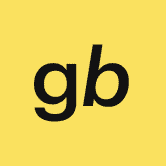 Grandbazar 基于 Everscale 区块链的 NFT 市场，支持 True NFT 技术轻松创建、买卖 NFTgrandbazar.io 最活跃的成员将从独家 GB Merchants 收藏中获得 3333 个独特的 NFT，并访问我们的收藏家俱乐部。 Special GB Merchants 系列的
Ebisu's Bay Ebisu’s Bay 是 Cronos 网络上最大的不可替代代币 (NFT) 交易市场。使用 Cronos 的原生代币 CRO，Cronos 社区可以与其他 NFT 交易者和消费者进行点对点交易、买卖。由于我们
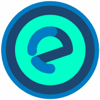 Ecommer Chain ECOMMERCHAIN 团队为电子商务公司提供了独特的解决方案，以实现其业务向区块链的无缝过渡。 管理现金流以维持和发展运营是所有商业运营的主要挑战之一，尤其是对于
GhostMarket 第一个跨链 NFT 市场。 销售、发现、创建和购买 Phantasma & NEO & BSC & Polygon & Avalanche 和 Ethereum 收藏品。 具有 ERC721/ERC1155 NFT、链上版税、链上锁定内容、购物/销售购物车体验等等！有些是
Gmart by Gravis Finance Gmart 是一个 NFT 市场，是 Gravis Finance 生态系统的一部分。 Gravis Finance 是一个将 DeFi 平台、游戏内资产的 NFT 市场和 Evervoid 游戏结合在一起的生态系统。 我们提供所有必要的工具来管理您在
Griffin Art GriffinArt 是下一代、去中心化和最新的主要 NFT 市场和 GameFi 项目（围绕神话生物），由透明、强大、可靠和超通缩令牌提供支持：$GART 在格里芬艺术平台上，我们正
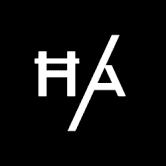 Hash Axis HashAxis 使用 Hedera 实现快速、可扩展和低成本的 NFT 原生 NFT 版税用于二级销售 可扩展的代币转移（10,000 tps） HashAxis 利用 Hedera 代币服务——结合 Hedera 上的原生原子交换和
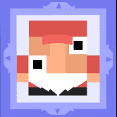 Joepegs Joepegs 是 Avalanche 上值得信赖的 NFT 市场。为各行各业的创作者和收藏家打造的家园，作为优质数字资产的文化中心。在 Joepegs 发现数字艺术和文化并与之互动。 LaunchP
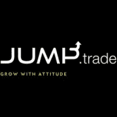 Jump.trade Jump.trade 是一个优质的 NFT 市场，在以游戏、品牌和国际艺术家为特色的独一无二的生态系统中提供独家 NFT 收藏。展开具有全球影响力的 NFT。 作为最初的发布，Ju
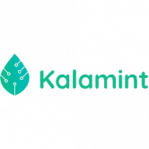 Kalamint Tezos 上第一个社区拥有的 NFT 市场。 清洁 NFT 运动的领导者 Kalamint 是 Tezos 的首批市场之一，Tezos 是一个 LPoS 区块链，与耗电量大的同行相比，它消耗的能源只占一小部分
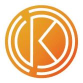 Kephi Gallery Kephi Gallery 是一个跨链、低费用的 NFT 市场，来自不同学科的艺术家可以在这里聚集并分享（并获利！）他们的作品。从视觉艺术到音乐，从电影剪辑到戏剧，欢迎每位
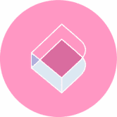 Doki Doki DeGacha 是一个独一无二的 NFT 平台，它将令人上瘾的 Gachapon 机器与数字艺术、收藏品和 DeFi 质押相结合，创造难忘的体验！ Gachapon (ガチャポン) 是日本的一种文化现象，各个年
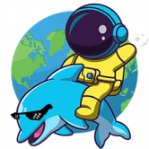 DolphinNetwork Dolphin Network 是一个完全去中心化的 Meme 代币 NFT 市场。 DOLP 不仅是 Meme 币，还是一个 NFT Marketplace，用户可以在其中创建 NFT meme 并在 Marketplace 上进行交易。 NFT 农场 DOLP Token 拥有
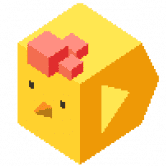 Double Protocol Double Protocol 是一个 NFT 租赁平台，主要用于 GameFi 和元界资产。利用Double提出的Dual Role NFT标准EIP-4907，可以轻松实现所有权和使用权的分离，极
Foundation 如何在 Foundation 上注册为创作者？ 我们现在只接受邀请。想要成为 Foundation 的创作者？当我们更广泛地开放时，我们会宣布。 邀请如何运作？ 基金会社区的发展现在掌握在创
GameX NFT Marketplace NFT Marketplace 在加密历史上第一次拥有一个治理钱包，其中一定比例的买卖费用将捐赠给癌症儿童，以便在他们之间传播快乐和健康。有什么比捐赠和帮助他人更好的呢
Liquid Collectibles Liquid Collectibles 是一个有特色的 NFT 市场。它结合了蓬勃发展的 DeFi 趋势和你最喜欢的收藏。有了我们，收藏家和 DeFi 农民都可以有宾至如归的感觉。在接触 NFT 的同时获得收益，
Liquidifty HTML Liquidifty 为 NFT 收集者提供了不同的工具。该平台的每个用户都将能够使用跨链 NFT 预言机，在 NFT 抵押品下获得贷款，通过 NFT 保险库赚钱等等。有许多不同且独特的 NF
LooksRare 作为社区第一的一部分意味着 LooksRare 奖励、授权并回馈平台的用户和创作者。 💎 获得奖励 - 从符合条件的收藏中购买或出售 NFT 的用户可以获得 LOOKS 代币。 🤝 分享平台费
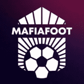 MAFIAFOOT MAFIAFOOT 是一款为赢得足球俱乐部管理而玩的游戏，女巫集成了强大的 TYCOON 部分。 在发展您的 NFT 卡、赢得比赛和管理俱乐部基础设施的同时创造收入！ 黑手党统计 该数据
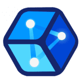 DGame Meta 当用户通过围绕区块链游戏创建内容、搜索信息、参与社交网络和游戏竞赛或交易资产为 DGame Meta 生态系统增加价值时，我们将奖励用户 DGM、DGame Meta 原生
DigitalArt 以太坊区块链上的世界上第一个区块链网站 NFT 收藏品市场现在可在 L2（第二层）Polygon 的区块链上使用。运营发展中的虚拟经济 DigitalArt.Crypto 代币“DANL”
DigitalEyes Market Solana 的第一个开放且无需许可的 NFT 市场！交易任何 NFT，安全有保障！NFT 根据收藏通过我们的创建者门户提交的薄荷哈希列表进行身份验证，而标记为“未
Empire NFT Marketplace 作为 Empire Token 用例帝国的第一个，Empire NFT 市场是一个用户友好的平台，用于交易不可替代的代币 (NFT)，包括艺术、音乐和视频等。这是有史以来第一
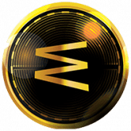 Encyclopedia wTa Encyclopedia wTa 是一个基于 Web 3.0 的教育技术、终身学习和教学平台，为成人和学生提供付费专业培训师和课程。 很高兴知道：百科全书 wTa 是一个平台的数字货币，去中心化
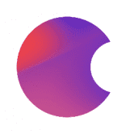 Enter NFTART 是 BSC 上的通缩实用代币，为 NFT 生态系统的进入提供动力。代币经济学以被动收入奖励持有者，其中 5% 被重新分配，5% 在区块链上的每笔交易中被烧毁。 NFART 于
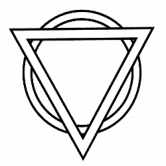 Eonet Eonet 是一个人们可以使用 EON 代币交易虚拟物品的地方，您可以在 eonet 上直接使用 BNB 购买 EON 代币，并出售 EON 代币直接获得 BNB。您还可以在我们的dapp上列出您
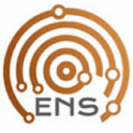 EOS Name Swaps 去中心化的 EOS 账户交易所。可以以 2% 的卖家费用购买和出售高级帐户名称。所有账户交换均由 EOS 智能合约完成。 几个月来，我们一直在为我们的平台添加后缀，
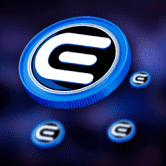 EUSD Miner 我们的去中心化 EUSD 矿工 Dapp 一旦您进入我们的生态系统，您就可以投资 EUSD 代币并获得每日 9% 的投资和 12% 的推荐奖励。任何拥有智能手机和互联网连接的人都可以参
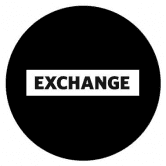 Exchange Art 一个易于使用、实用且方便的 Solana NFT 市场，适合所有人！ 我们只有一个星球。 在不破坏环境的情况下买卖艺术品。 通过在 Solana 区块链上构建，每笔交易使用的能源少
CroSea 什么是 Crosea？ Crosea 是在 Cronos 区块链上交易不可替代代币 (NFT) 的最大开放 nft 市场。 使用 CRO、Wrapped USDT 和任何 CRC20 代币，Cronos 社